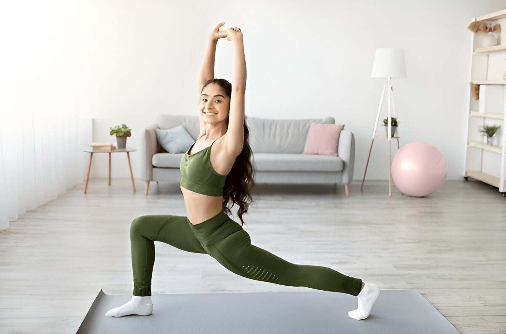
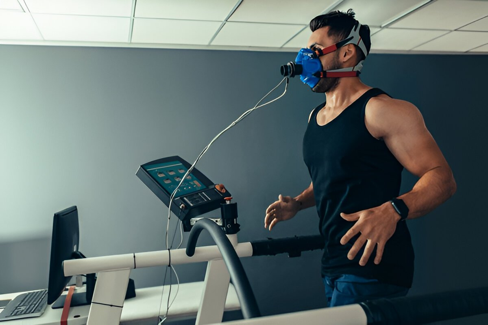
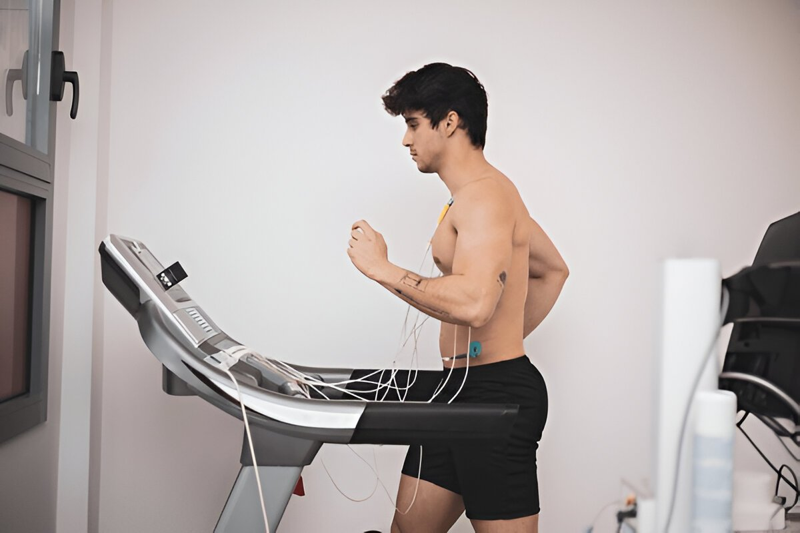
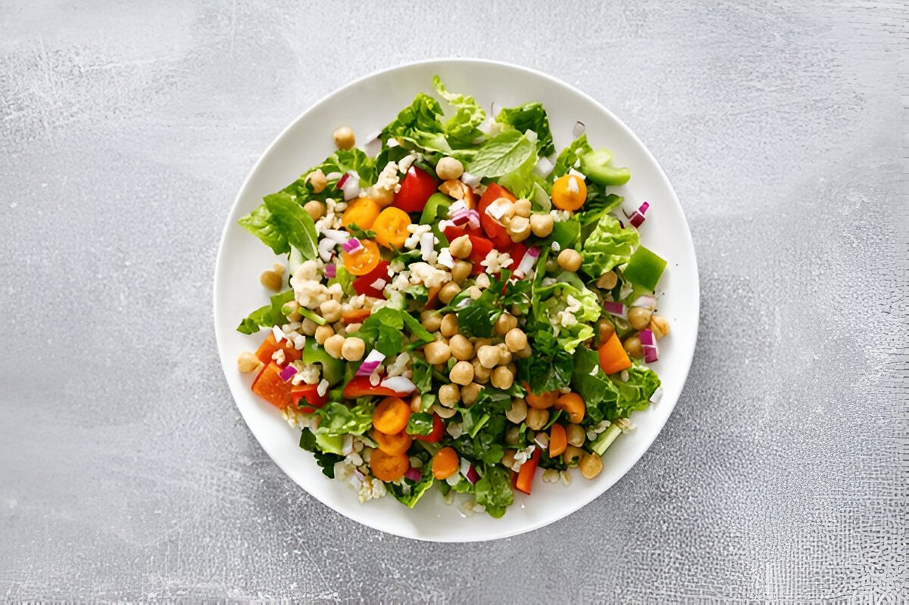
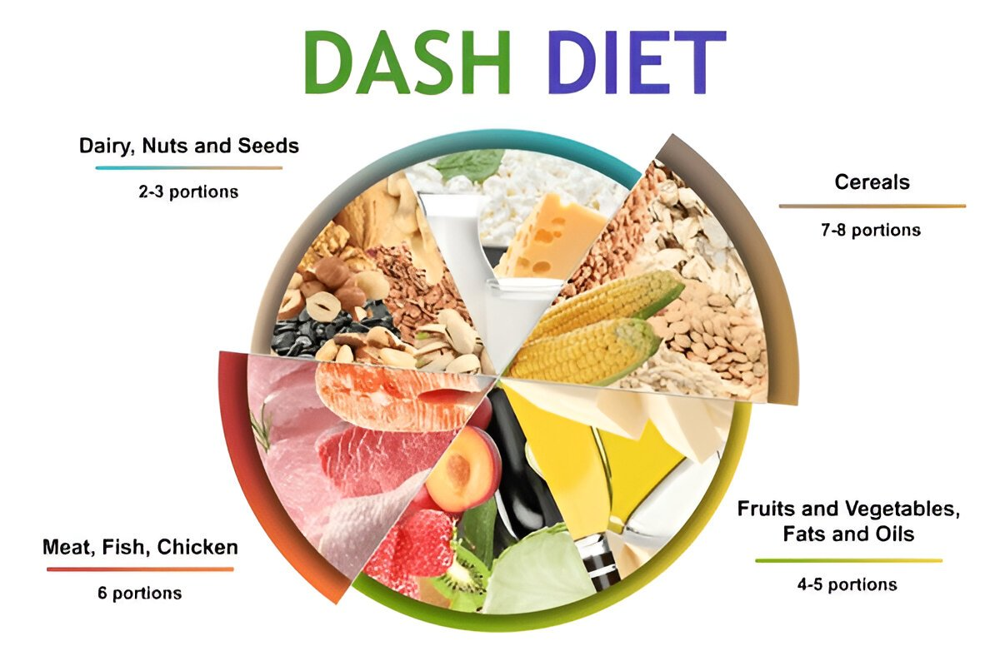
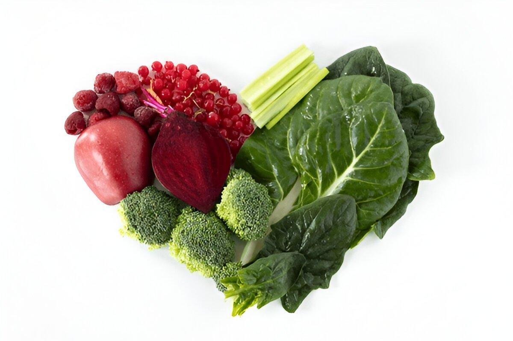

HeartSpan isn't a trend — it's a science-backed health transformation grounded in decades of clinical evidence across exercise, nutrition, and lifestyle medicine.
👉 Intensive lifestyle change (low-fat diet, exercise, stress management) reversed artery blockage and led to 50% fewer cardiac events — without medication.
👉 90% of heart attack risk is linked to modifiable lifestyle factors: stress, smoking, inactivity, diet, etc.
👉 Aerobic or combined cardio + resistance training lowered LDL, body fat, and improved VO₂ max. Resistance-only training did not.

👉 VO₂ max is a stronger predictor of survival than traditional markers in heart failure patients.

👉 Meeting aerobic exercise guidelines reduced cardiovascular risk by 27–40%.

👉 A Mediterranean diet led to a 30% drop in stroke and heart attack risk in high-risk patients.

👉 Diets rich in vegetables, whole grains, and low in salt and saturated fat improved BP and heart markers.

👉 Whole-food, plant-based diets improved lipids, insulin sensitivity, and inflammatory markers.

HeartSpan translates clinical evidence into real-world change. Each client receives a tailored plan based on their physiology, preferences, and data. Here's how we apply the research:
→ Builds cardiorespiratory fitness, improves mitochondrial density, and lowers long-term cardiac risk.
→ Increases parasympathetic tone, lowers stress, improves HRV, and enhances emotional resilience.
→ Designed to lower LDL, reduce inflammation, improve insulin sensitivity, and optimize metabolic flexibility.